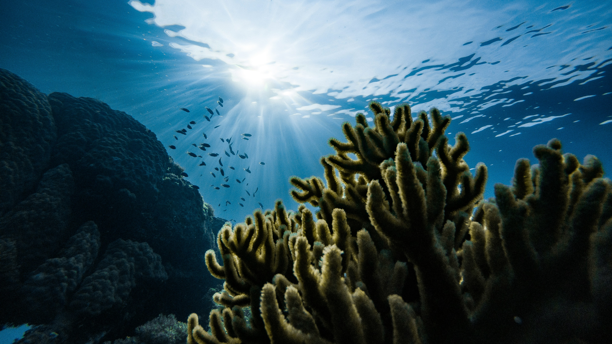
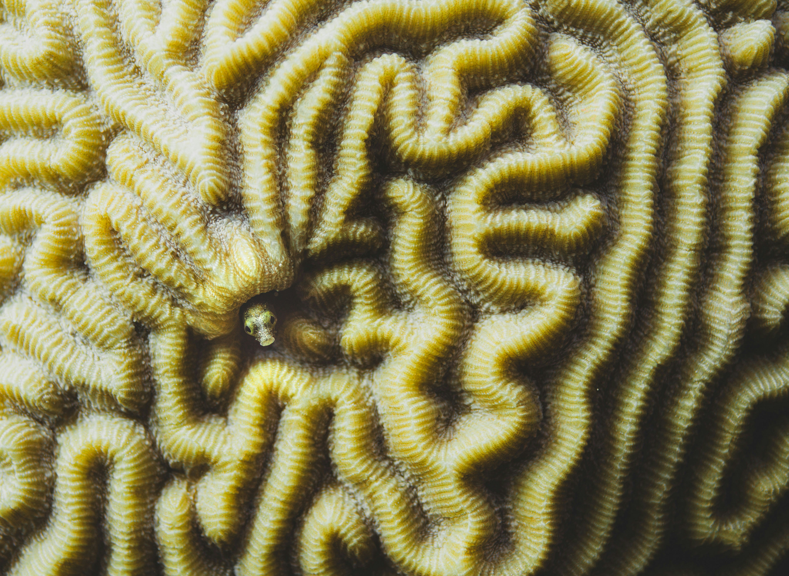
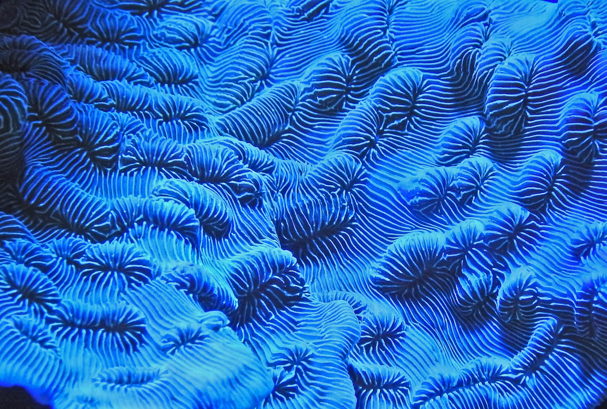
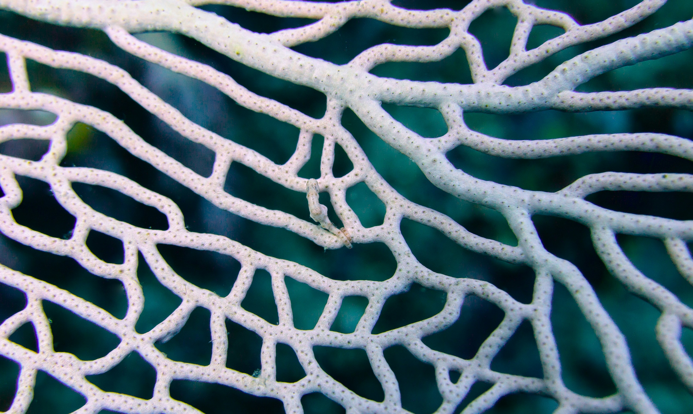
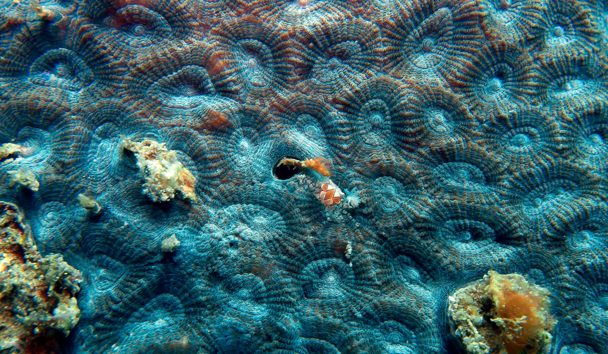
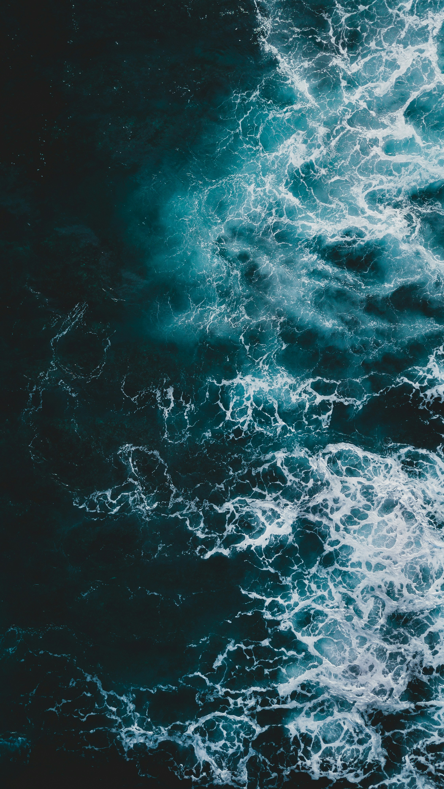

Los océanos necesitan acción inmediata
Los mares regulan el clima, generan oxígeno y sostienen millones de especies. Sin embargo, la contaminación, la sobrepesca y el cambio climático amenazan gravemente su equilibrio natural.

Cada acción cuenta. Completá el formulario y ayudanos a impulsar iniciativas que protejan los océanos y promuevan un futuro más sostenible.
Los mares regulan el clima, generan oxígeno y sostienen millones de especies. Sin embargo, la contaminación, la sobrepesca y el cambio climático amenazan gravemente su equilibrio natural.



Además de su valor ambiental, los océanos son fundamentales para la economía y la vida cotidiana de millones de personas. Protegerlos implica cuidar fuentes de alimento, empleo, biodiversidad y el bienestar de las futuras generaciones.
La recuperación de manglares, arrecifes y áreas costeras demuestra que las acciones de conservación pueden generar impactos positivos reales en la biodiversidad y la salud de los océanos.Proyectos de restauración alrededor del mundo evidencian que, con compromiso colectivo y políticas sostenibles, es posible revertir parte del daño ambiental y proteger estos ecosistemas para las futuras generaciones.


Cada año millones de toneladas de residuos terminan en el océano, afectando ecosistemas, especies marinas y comunidades costeras alrededor del mundo.
Leer más
Los arrecifes de coral albergan una enorme biodiversidad y funcionan como barreras naturales frente a tormentas y erosión costera.
Leer más
Implementar prácticas responsables permite conservar poblaciones marinas y asegurar recursos para las generaciones futuras.
Leer más
El aumento de la temperatura y la acidificación alteran ecosistemas marinos y ponen en riesgo la biodiversidad submarina.
Leer más
Reducir plásticos de un solo uso y consumir de manera responsable ayuda a disminuir el daño sobre mares y océanos.
Leer más